Identita domu
„Lutherhaus“: dvoupodlažní dům s nápisovým pásem nad přízemím, mělce obloukovými vstupními dveřmi a pěti volskými oky ve dvou řadách. Identitu určuje pořadí domů na fotografiích ve shodě se šířkami parcel v GIS.
Použité prameny: fotografie z roku 1969 (cp_111,263,264_001) a řady 111–267 (cp_111,154,265,266,267_001), archivní karta, GIS půdorys.
Přílohy v databázi (7)
Všechny přílohy struktury 111 v databázi Libuše, načtené 18. 10. 2026 a otevřené. Kliknutím otevřete větší náhled.

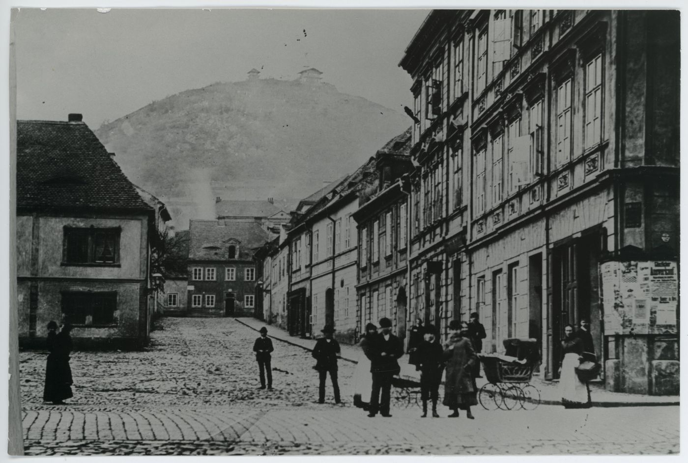
fotografie
SHA-256 0ebdc835a90e…

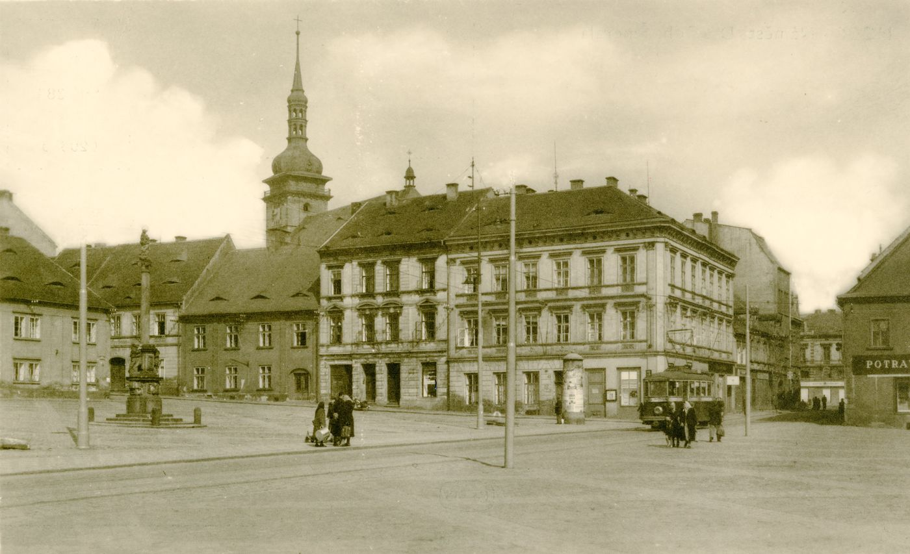
pohlednice
SHA-256 b8adcb802c28…

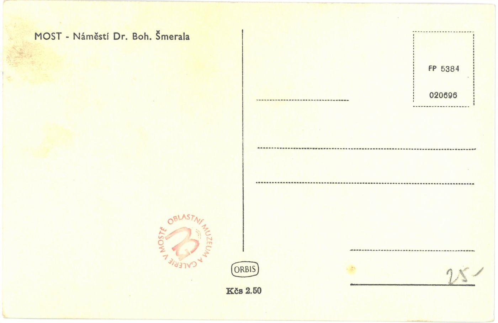
pohlednice
SHA-256 211003d6e8aa…

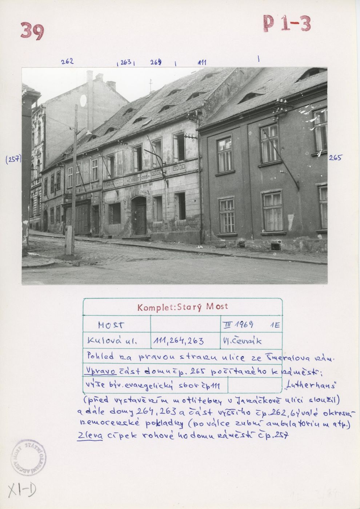
archivní karta
SHA-256 7e1c2e60a8ae…

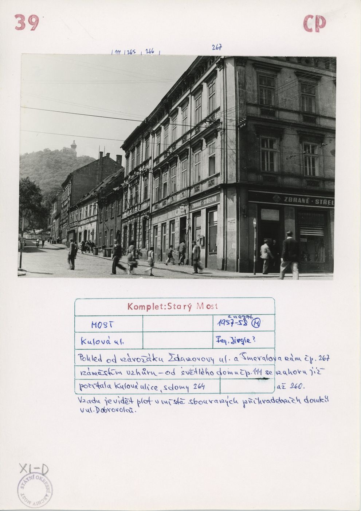
archivní karta
SHA-256 2bd813fa16fa…

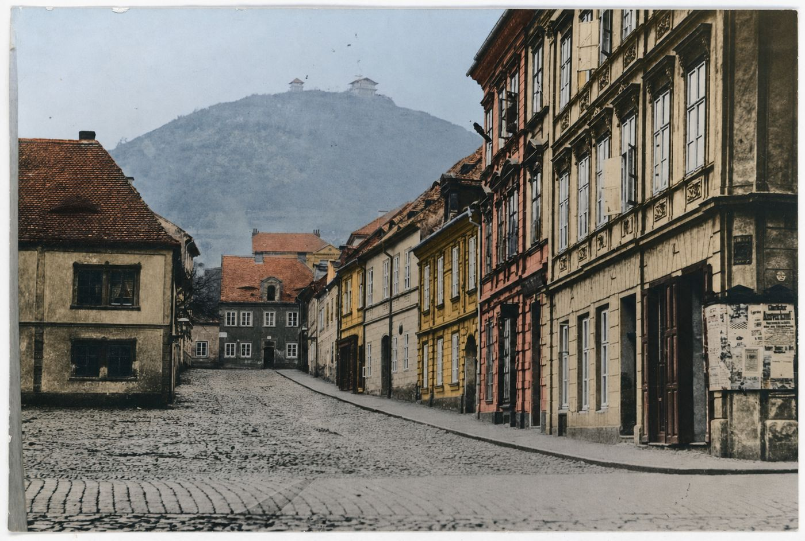
odvozenina (kolorovaná / FRONT)
SHA-256 050253bb34ef…

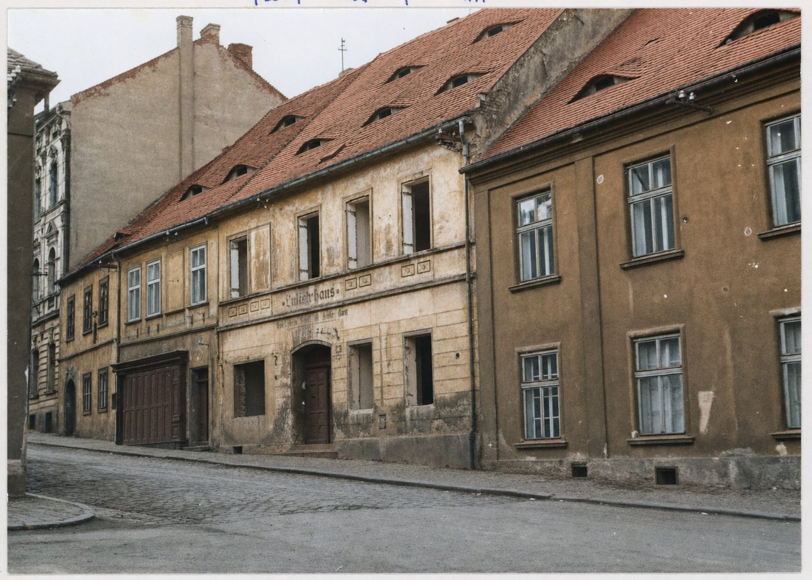
odvozenina (kolorovaná / FRONT)
SHA-256 fa22e384e1ba…
Geometrie
| Revize geometrie | r6 |
|---|---|
| Poloha | GIS půdorys id 11 (ulice Kulová) |
| Šířka průčelí | 11,43 m |
| Výška okapu | 6,90 m (odhad) |
| Podlaží | 2 |
| Střecha podle pramenů | sedlová s pěti volskými oky; zadní křídlo bez plánu střechy (hypotéza) |
| Otvory / vikýře | 13 / 5 |
| Polygonů | 330 |
Kontrolní pohledy
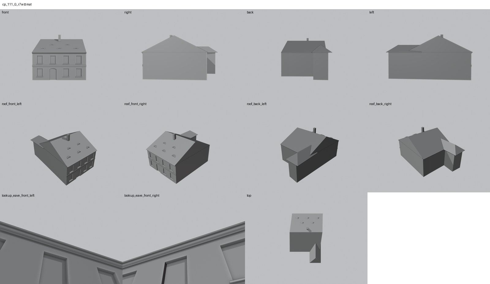
Střešní otvory
Každý otvor ve střeše zepředu, zleva, zprava, shora a zezadu; řádky: materiálová ID, clay a hlavní krytina purpurově (ověření, že v otvoru není plocha hlavní střechy).

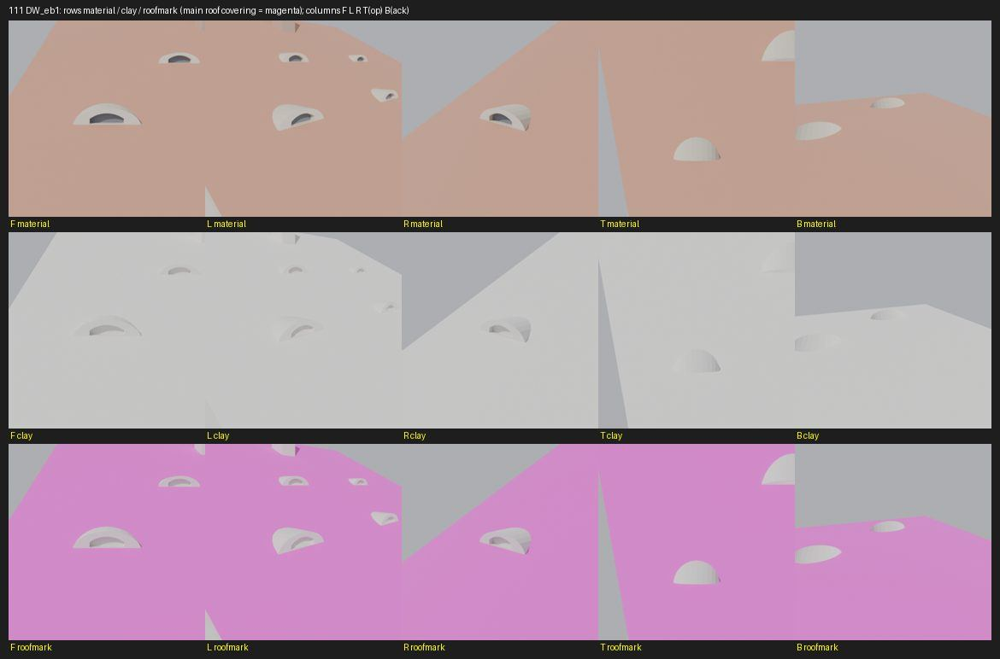

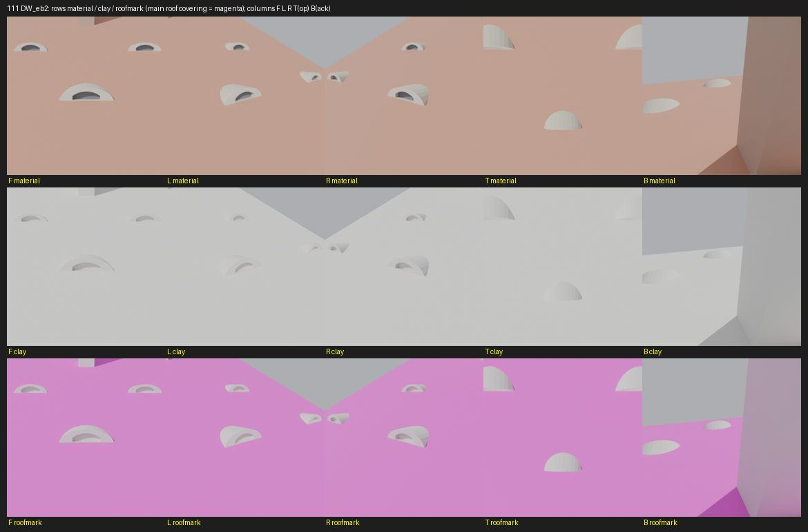

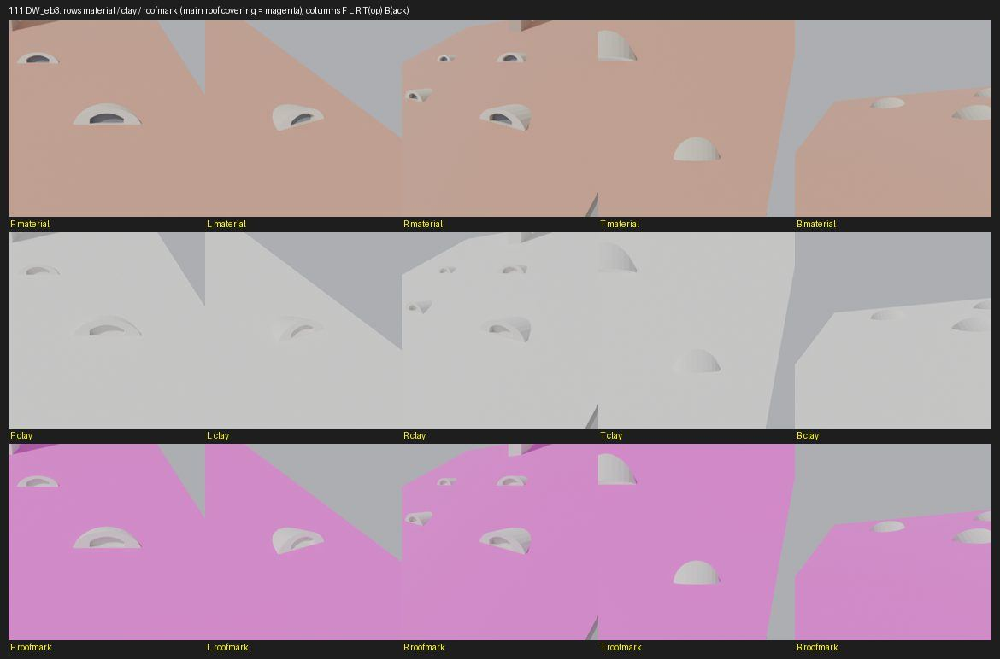

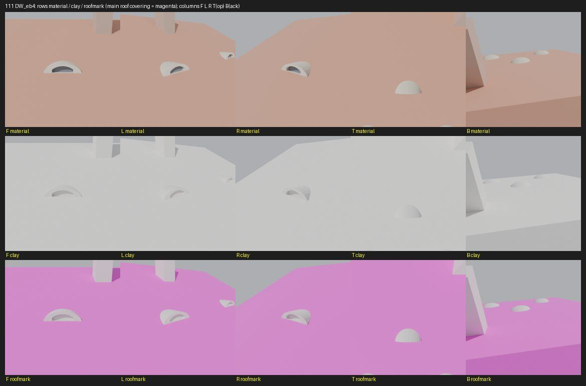

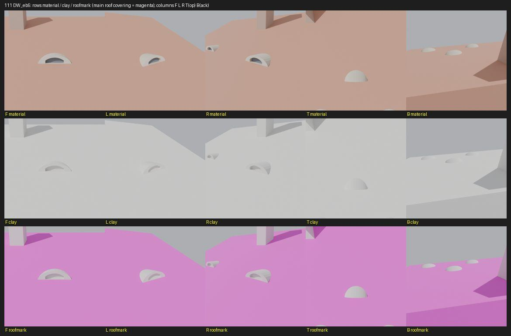

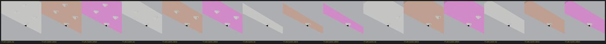
Textury
Codex: samostatná texturovaná pracovní studie
Hotový pracovní model lze přepnout v horním náhledu. Otevřít samostatnou texturovanou studii čp. 111. Původní geometrický model níže zůstává dostupný beze změny.
Hypotézy
Vše níže je model_hypothesis, provisional, locked: false.
- identita „tmavý dům = 111“ podle popisku karty 111,263,264; identity report ji nechává provisional
- osy odečteny ze šikmého záběru
- eyebrow positions read from the original B/W FRONT (3 lower at ~2.0/5.7/9.4 m, 2 upper at ~3.9/7.6 m); sizes estimated – provisional
- door arch: shallow segmental per photo
- rear wing unchanged – hypothesis without roof plan
Soubory
- Geometrie čp. 111, GLB
- Pracovní model: F:\MOST\output\kulova_geo_qa_claude_2026-10-18\houses\cp111\r6\cp_111_G_r6.blend
- Plán modelu: F:\MOST\output\kulova_geo_qa_claude_2026-10-18\houses\cp111\geometry_plan.json